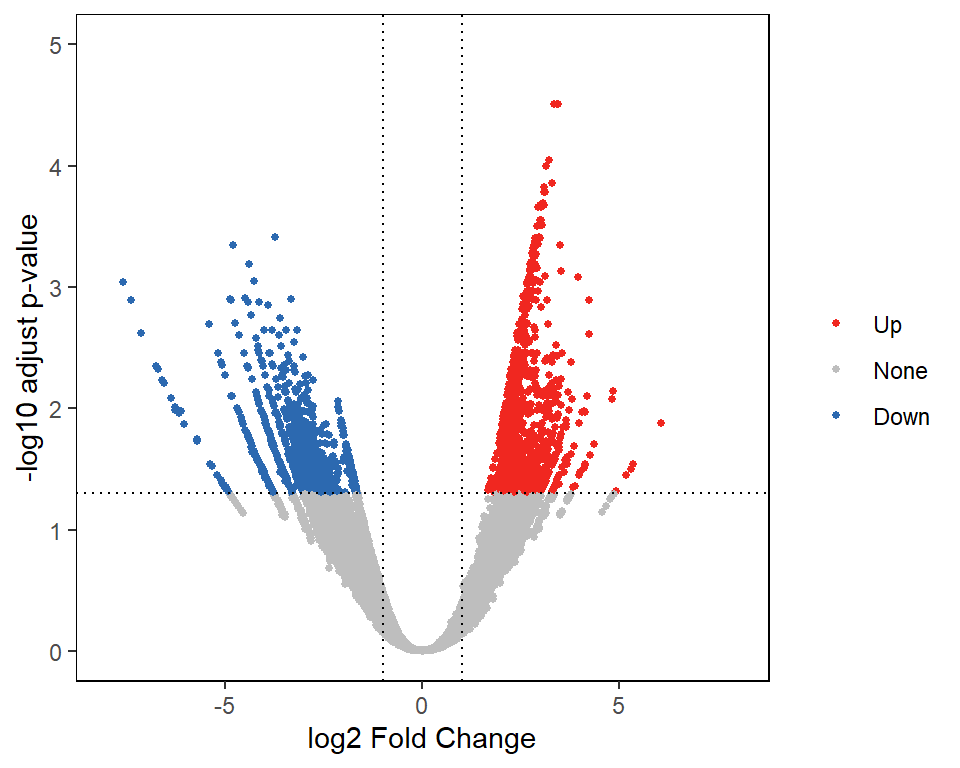
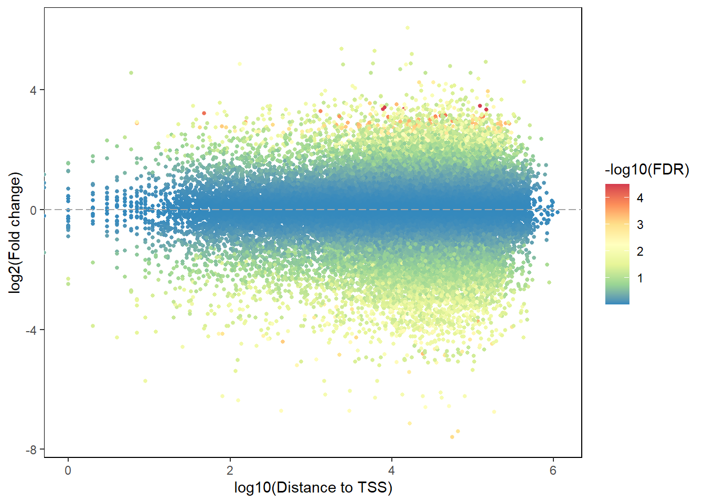
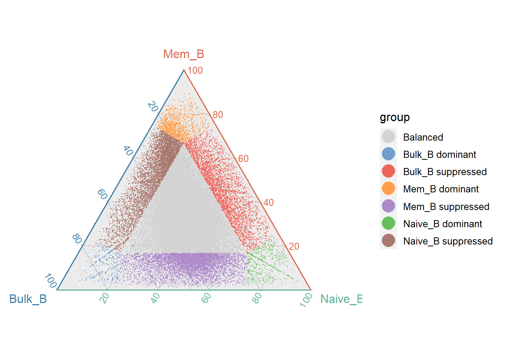

Chapter 6 Using DEseq2 to identify differentail OCR (Two samples)
quant_data <- read.table("F:/CAT/example/Diff_Analysis_Example.tsv",head=T, row.names = 1)
diff_res <- getDiffPeak(norm_data = quant_data, condition = c("Control","Exper"), control = "Control", experment = "Exper",rep = 2)## converting counts to integer mode## estimating size factors## estimating dispersions## gene-wise dispersion estimates: 22 workers## mean-dispersion relationship## final dispersion estimates, fitting model and testing: 22 workershead(diff_res)## baseMean log2FoldChange lfcSE stat pvalue
## chr1:10016-10607 54.030792 0.5635555 0.5826459 0.9672349 0.3334266
## chr1:237589-237928 11.903993 0.3358489 0.7164559 0.4687643 0.6392381
## chr1:521379-521712 6.946804 0.1798363 0.8110918 0.2217212 0.8245309
## chr1:540496-541113 8.700218 -0.1107456 0.7780795 -0.1423320 0.8868178
## chr1:559303-559603 8.693440 -0.2740060 0.7751323 -0.3534957 0.7237168
## chr1:564421-565042 24.555285 0.2952452 0.6325501 0.4667538 0.6406760
## padj sig
## chr1:10016-10607 0.7779954 None
## chr1:237589-237928 0.9452912 None
## chr1:521379-521712 0.9800009 None
## chr1:540496-541113 0.9845317 None
## chr1:559303-559603 0.9657660 None
## chr1:564421-565042 0.9456528 NoneplotVolcano(diff_data = diff_res)
6.1 Get the differential peaks target genes
target <- getDiffTargetGenes(diff_data=diff_res,
tss_file ="F:/CAT/example/hg19_tss_standard.bed")
head(target)## chrom start end baseMean log2FoldChange lfcSE stat
## 1 chr1 100009953 100010254 20.142897 -0.4939808 0.6575732 -0.7512181
## 2 chr1 100012048 100012826 23.103692 -0.3060881 0.6464743 -0.4734730
## 3 chr1 100017890 100018149 8.223809 -0.8358235 0.8052071 -1.0380231
## 4 chr1 100023076 100023997 22.811175 0.2890909 0.6505642 0.4443696
## 5 chr1 10002486 10002743 8.659492 1.0989500 0.7945523 1.3831059
## 6 chr1 10002897 10003700 55.147809 -0.1827790 0.5806837 -0.3147652
## pvalue padj sig peak_center TSS gene strand distance
## 1 0.4525214 0.8669849 None 100010103 99929934 1 + -80169
## 2 0.6358758 0.9436658 None 100012437 99929934 1 + -82503
## 3 0.2992593 0.7424509 None 100018019 99929934 1 + -88085
## 4 0.6567754 0.9507410 None 100023536 100111499 1 + 87963
## 5 0.1666324 0.5544505 None 10002614 10003465 1 - -851
## 6 0.7529400 0.9699603 None 10003298 10003465 1 - -1676.2 PlotMA
plotMA(target)## Warning: Removed 21 rows containing missing values (`geom_point()`).
6.3 Compare the three samples chromatin accessibility (Three samples)
quant_data <- read.table("F:/CAT/example/ATAC_CPM_Norm_Data.tsv",head=T, row.names = 1)
quant_data <- quant_data[,1:3]
getTraids(group_name=c("Bulk_B","Mem_B","Naive_B"), quant_df = quant_data, return_matrix=F)## Registered S3 methods overwritten by 'ggtern':
## method from
## grid.draw.ggplot ggplot2
## plot.ggplot ggplot2
## print.ggplot ggplot2
traids_res <- getTraids(group_name=c("Bulk_B","Mem_B","Naive_B"), quant_df = quant_data, return_matrix=T)
ss <- getTraidsTargetGenes(traids_data = traids_res, tss_file ="F:/CAT/example/hg19_tss_standard.bed")
head(ss)## chrom Peak_center Bulk_B Mem_B Naive_B group Peak_start
## 1 chr1 10002608 13.8856986 10.0789262 14.2993450 Balanced 10002479
## 2 chr1 10003278 42.9063666 36.3064701 40.1604987 Balanced 10002882
## 3 chr1 10010879 24.0408104 21.8499202 23.6924342 Balanced 10010375
## 4 chr1 100151435 2.8567393 4.0018620 1.9159796 Balanced 100151309
## 5 chr1 100165813 0.7423252 0.5227386 0.5916473 Balanced 100165700
## 6 chr1 100170051 1.5425758 1.2980058 0.9026976 Balanced 100169976
## Peak_end TSS gene strand distance
## 1 10002738 10003465 ENSG00000162441 - -857
## 2 10003675 10003465 ENSG00000162441 - -187
## 3 10011383 10003465 ENSG00000162441 - 7414
## 4 100151561 100163798 ENSG00000223656 + 12363
## 5 100165927 100163798 ENSG00000223656 + -2015
## 6 100170126 100163798 ENSG00000223656 + -6253